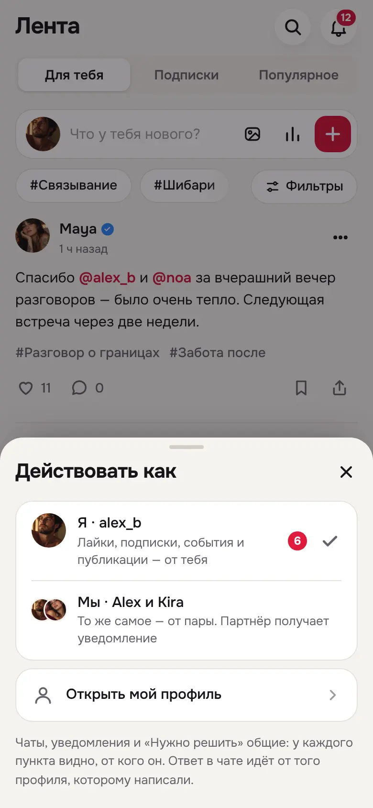
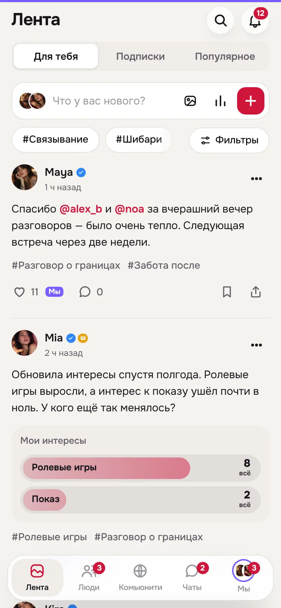
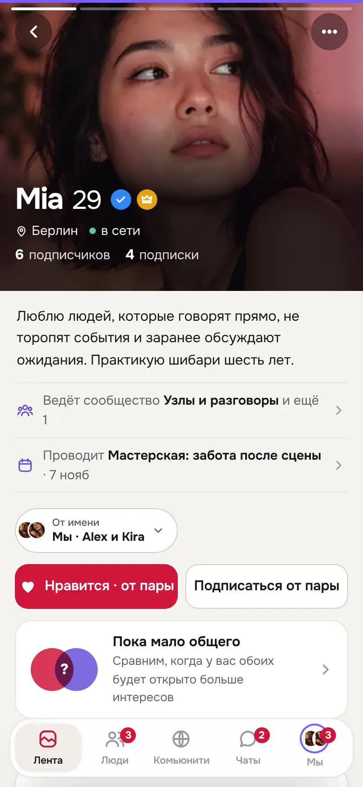
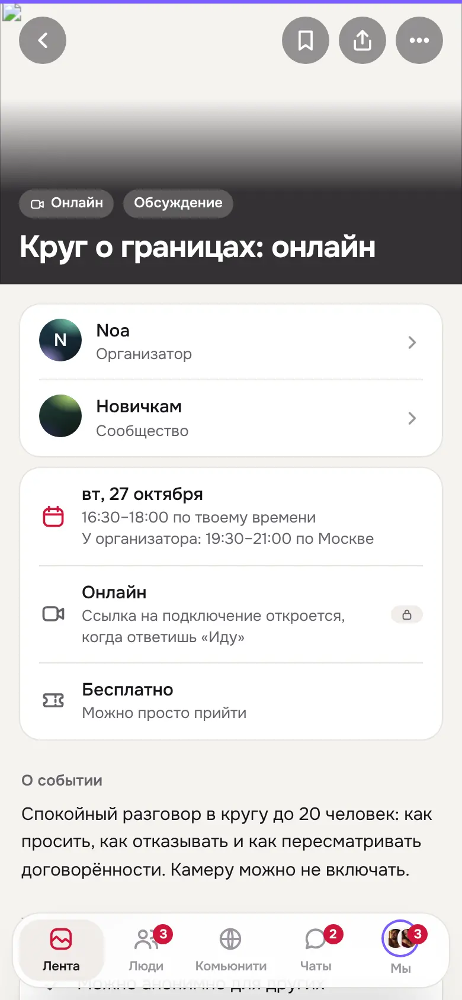
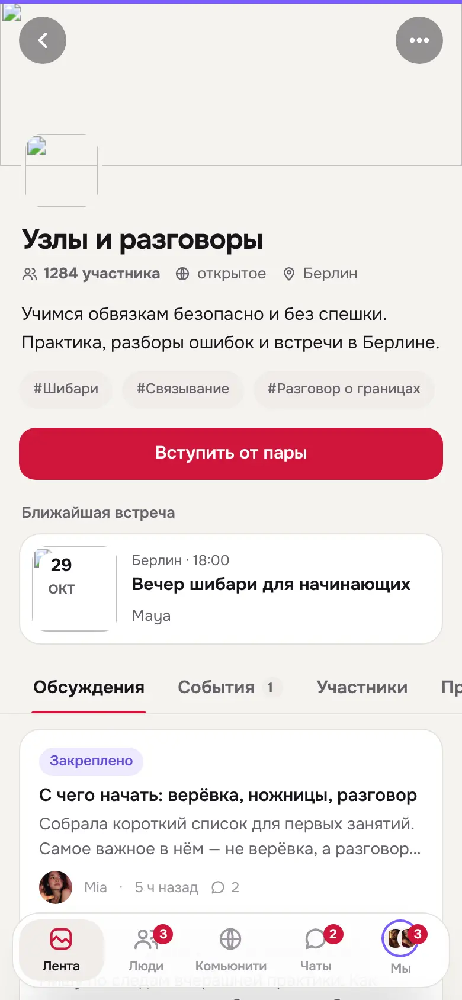
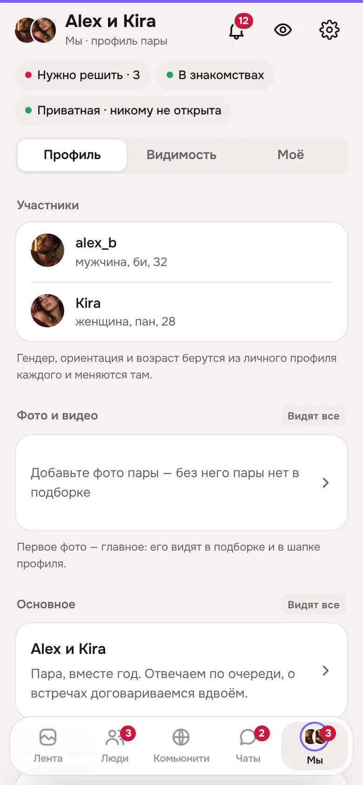

FetUre V19 — «Я / Мы» в докбаре
Теперь «Я» или «Мы» выбирается в одном месте — аватаром в докбаре — и действует на всё приложение. В режиме «Мы» лайки, подписки, сообщества, события и публикации идут от пары, как у соло. Уведомления, чаты и «Нужно решить» общие.
V18 сохранена без изменений. Журнал — docs/design-reference/V19-CHANGELOG.md. Контракт — tests/prototype-v19-contract.mjs: правила V13, V14 и V18 плюс проверки V19.
Решения владельца
| Вопрос | Решение |
|---|---|
| Согласие партнёра | Нужно только для ответа на событие, и только если партнёр включил подтверждение. Лайки, подписки и вступление в сообщества идут сразу, партнёру приходит уведомление. |
| События и сообщества | «Идём» от пары занимает 2 места. В сообщество пара вступает как один участник; в закрытое — по заявке, её одобряет ведущий. |
| Режим после перезапуска | Запоминается последний выбор. В прототипе он живёт до перезагрузки страницы, как и все данные. |
| Аватар в доке | Нажатие открывает «Действовать как»: «Я», «Мы» и «Открыть профиль». |
Как это работает
Докбар
Вместо значка «Я» — аватар текущего профиля: свой или двойной аватар пары в фиолетовом кольце. Подпись под ним — «Я» или «Мы». Без пары нажатие просто открывает профиль. С парой открывается лист «Действовать как»: «Я · alex_b» и «Мы · Alex и Kira» со счётчиками новых симпатий и запросов у каждого, ниже «Открыть профиль». На компьютере тот же лист открывает кнопка с аватаром внизу боковой панели.
Режим всегда виден
В «Мы» по верху экрана идёт фиолетовая полоса. У сердечек появляется метка «Мы». На кнопках прямо написано, от кого действие: «Нравится · от пары», «Подписаться от пары», «Вступить от пары», «Идём · 2 места», «Опубликовать как · Мы». Подписи-кнопки автора в редакторе, профиле и подборке открывают тот же лист из докбара: переключатель один.
Что от чьего имени
- Режим решает: лайки публикаций, обсуждений и ответов; подписки; вступление в сообщества; ответы на события; новые публикации; подборка знакомств и симпатии; экран «Я».
- Своё имя решает: чат отвечает от того профиля, которому написали; уведомление, запрос доступа и уже созданная публикация — от своего профиля.
- Общее: уведомления, чаты (с фильтром «Личные / От пары»), «Нужно решить», сохранённое, блокировки, настройки.
- Раздельное: членство в сообществах, ответы на события, подписки, реакции, симпатии и подборка, доступы.
Без молчаливых подмен
Если в режиме «Мы» симпатию от пары отправить нельзя (у пары выключены знакомства или человека нет в знакомствах), кнопки «Нравится» нет. Вместо неё объяснение и подсказка «Сменить профиль — аватар внизу». Раньше в таком случае симпатия молча уходила от «Я».
Ссылка на свой второй профиль (например, на пару в ленте, когда включено «Я») открывает его только для просмотра и не переключает режим.
События с согласием
Если партнёр включил подтверждение, ответ «Идём» или «Интересно» от пары уходит ему на согласование. На событии появляется «Ждёт Kira», у партнёра — пункт в «Нужно решить» с кнопками «Одобрить / Вернуть». «Не идём» и снятие ответа срабатывают сразу.
Экраны






Проверено
VERIFIED
Не проверено: реальные устройства, экранные дикторы, живая пара с двух телефонов, проверка на людях.